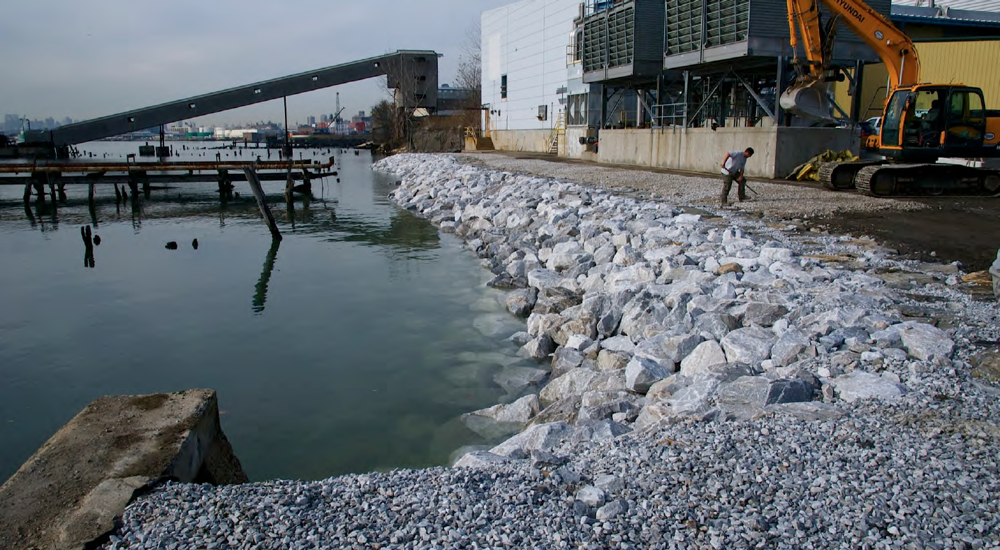

Instantly view the total cargo, container number of units, number of containers, number of buyers, and more. HPSS Imode delivers comparable marketplace analysis accurately and fast for the discreet shipping distribution decision making process.
The HPSS Imode team is currently structuring its databases of shipping and transport market trends and Port Authority standards in order to deliver relative analytical and comparable cost analysis.
Port docking and registration procedures.
HPSS Imode efficiently communicates geospacial relationships for seaport customers.
What is the best use of your site? Is it commercial, residential, industrial, mixed-use, community facility, affordable housing, a medicial office, an airport or a school?
HPSS Imode will assist any site development with clear template of what is existing (sometimes non-conforming uses) and what is allowable. HPSS Imode breaks down uses in a concise and valid stacking plan so all stackholders can know when at the time they need to know.
These certain districts throughout the city and planned to encourage specific uses, or encourage economic activity. The typical regulatory zoning constraints may alternate depending on the district that can challenge a development.
HPSS Imode helps teams visualize and understand the contextual relationships in an easy to your retrievable business to business networking system.
Today, more than 35,000 buildings throughout New York City are protected as individual landmarks, interior landmarks, scenic landmarks, or as part of 114 historic districts. Safeguarding the genius of place helps New York City's assure its history and its unique character amoung cities of the world.
Benefits and restrictions exist with landmark buildings. HPSS Imode allows customers to understand and plan for the challenges and opportunities that exist with these buildings.
With HPSS Imode complicated height factors, tower setbacks, sky exposure planes, and more are easily verified with 3D models, sections, plans, and elevations. Relationships to the site and the building context and rapidly explored with HPSS Imode.
These relationships are in 2 dimensions as well as three dimensions. Each restriction is clearly marked in corresponding section of the zoning text and comparable with our comphrensive database and interoperable links to the public documents for comparison.
Bargain with the city, add a plaza, a non-profit center, a dance school, a public plaza, whatever you desire...planning your development masterpiece with HPSS Imode is easy.
HPSS Imode's extensive database allows users to maximize the each building lot by allowing users to select adjancent and at times lots within the district, calculating all the available air rights transferable to a lot.
Rapidly view and compare building types. How does a tower on base development opportunity compare to tower setback from the street? How will a public plaza compare to a community facility devlopment?
The HPSS Imode platform eases building development desicion making among the whole team in an marvelous business to business network.
HPSS Imode allows customers to rapidly prototype building shapes and gemotries for enhanced feasibility and project development planning.
HPSS Imode comminicates contextual relationships in 2 dimensional maps, as well as 3D mapping interface. HPSS Imode
HPSS Imode is free. No hassles.